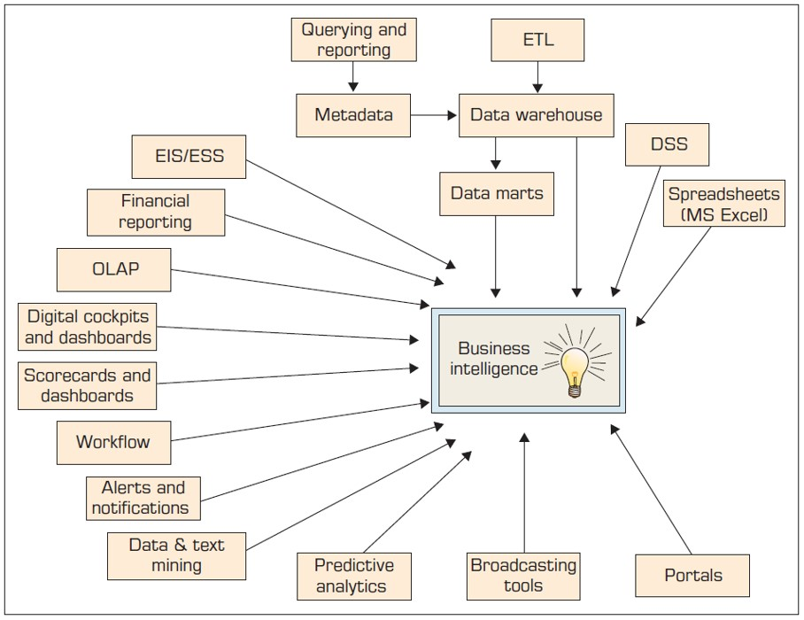
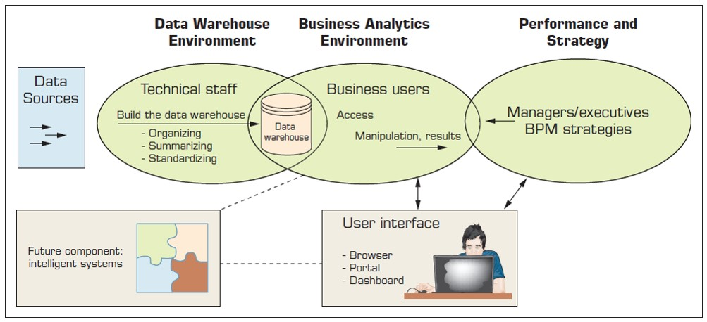
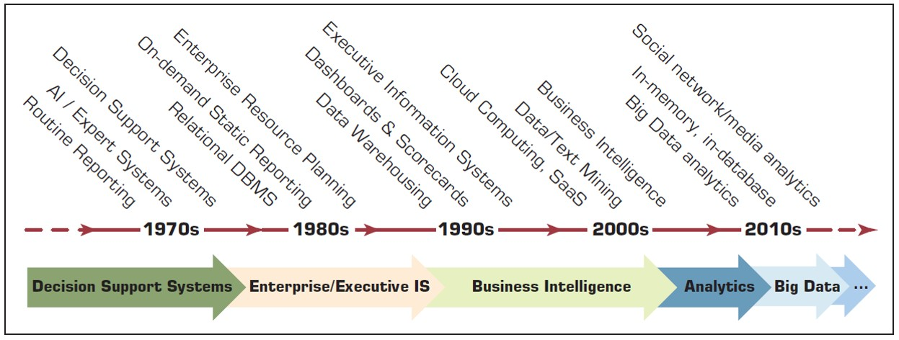
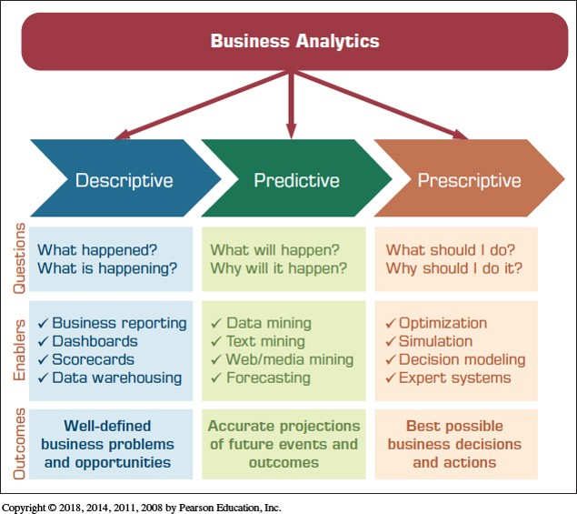
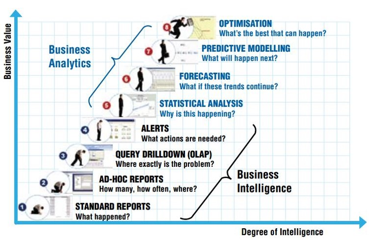
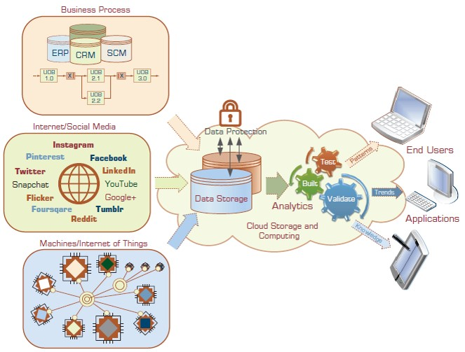
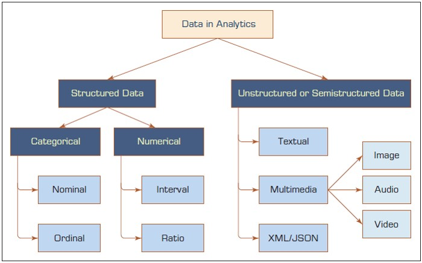

An Overview of Business Analytics
Min Li, Director of CSUS Center for Business Analytics
June 19, 2017
Outline
- What is Business Analytics?
- Descriptive Analytics
- Predictive Analytics
- Digital Analytics
- Prescriptive Analytics
- Big Data Analytics
- Emerging Trends
These slides were adapted from two business analytics textbooks (Sharda, Delen, and Turban) published by Pearson Education, Inc.
1. What is Business Analytics?
New Business Environments and Analytics
- Growing hardware, software, and network capabilities
- Powerful communication and collaboration tools
- Better data management
- Giant data warehouse and Big Data
- More powerful analytical tools and support
- Overcome human cognitive limits in processing and storing information
- Anywhere, anytime support
Business Intelligence
- An umbrella term that combines architectures, tools, databases, analytical tools, applications, and methodologies
- Descriptive analytics tools and techniques (i.e., reporting tools)
- Origins and Drivers of BI (see picture)
- Architecture of BI (see picture)
Origins and Drivers of BI

Architecture of BI

Evolution of Computerized Decision Support to Analytics/Data Science

BI, DW, and OLAP
- OLTP (online transaction processing): routine ongoing business
- Data Warehousing (DW) - middle data tier, repository to support business reporting and decision making
- DW is a distint system providing storage for data that will be used for analysis
- 2000s, DW-driven DSSs called BI systems
- DWs are intended to work with informational data used for OLAP (online analytical processing) systems
- DWs contain data presenting a coherent picture of business conditions at one time
- BI has evolved into analytics and data science
Three Types of Analytics - INFORMS

Eight Levels of Analytics - SAS

2. Descriptive Analytics
- Data
- Statistical Modeling
- Visualization
- Data Warehousing
- Business Performance Management
From Data to Knowledge

Are Data Ready for Analytics?
- Data source reliable?
- Data content accurate?
- Data accessible?
- Data security and data privacy?
- Data richness or comprehensiveness?
- Data consistency?
- Data currency/timeliness?
- Data granularity?
- Data relevancy?
A Simple Taxonomy of Data

[any material that should appear in print but not on the slide]